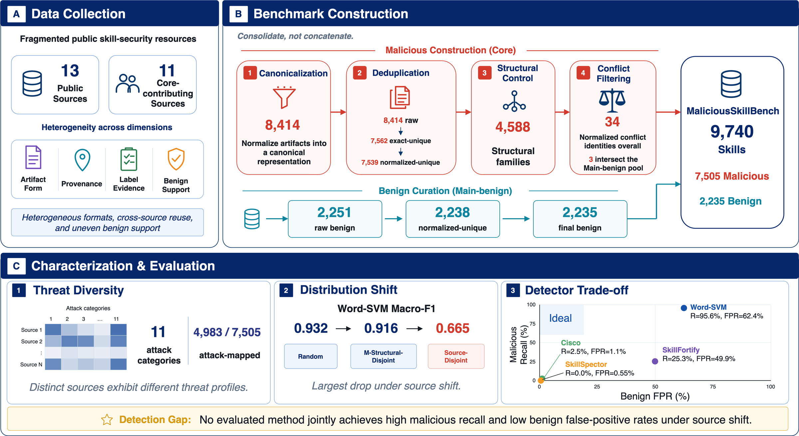
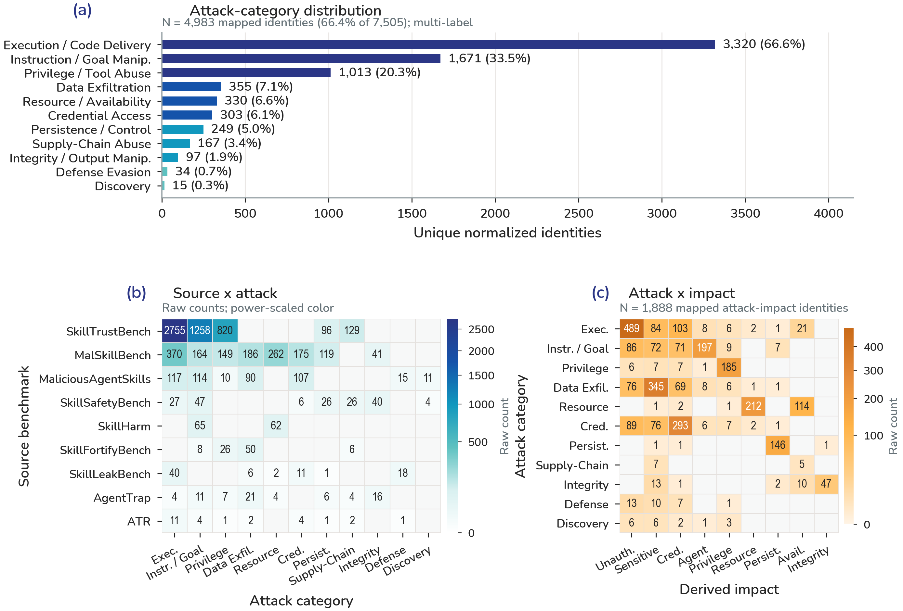

Security research benchmark
MaliciousSkillBench
A Comprehensive Benchmark for Malicious Agent Skill Detection
A consolidated benchmark of 9,740 Agent Skills from 13 public sources for controlled malicious-skill detection under random, structural-disjoint, and source-disjoint protocols.
Why MaliciousSkillBench?
Existing malicious Agent Skill resources are fragmented across sources, artifact formats, provenance conventions, label evidence, and benign support. MaliciousSkillBench consolidates these resources rather than concatenating them, with canonicalization, deduplication, structural control, cross-label conflict handling, and benchmark-specific evaluation protocols.
Benchmark at a Glance
Benchmark Construction
Existing Agent Skill security resources are fragmented across artifact forms, provenance, label evidence, and benign support. MaliciousSkillBench consolidates them rather than concatenating them.

Threat Landscape
A multi-label harmonized attack taxonomy covers 4,983 of 7,505 malicious identities across 11 categories. This is partial mapping, not complete attack coverage. Figure 2 is the quantitative threat landscape; the miniature matrix in Figure 1 is schematic.

Detection Findings
Word-SVM Macro-F1 remains high under random and structural-disjoint splits, then drops under source shift. This is source-conditioned generalization, not a universal out-of-distribution claim.
Under Source-Disjoint evaluation, Word-SVM retains 95.6% malicious recall but reaches a 62.4% benign false-positive rate. Cross-source degradation is dominated by benign over-flagging while malicious recall remains high.
| Method | Recall | Benign FPR |
|---|---|---|
| Word-SVM | 95.6% | 62.4% |
| SkillFortify-offline | 25.3% | 49.9% |
| Cisco-local-behavioral | 2.5% | 1.1% |
| SkillSpector-static | 0.0% | 0.55% |
Dataset Access
All 9,740 benchmark identities are represented in the public dataset; 9,549 provide public Skill text, while the remaining records retain metadata and provenance information without full text (5 sensitive-withheld, 186 snapshot-withheld). Hugging Face is the primary data host.
from datasets import load_dataset
dataset = load_dataset("ORG/MaliciousSkillBench")ORG/MaliciousSkillBench is a staging placeholder and is not a live repository.
Getting Started
The GitHub repository is the code and reproducibility hub. It hosts schema, source, taxonomy, and protocol documentation, frozen split manifests, and baseline evaluation scripts. The Paper and Dataset buttons remain inactive until public URLs are assigned.
Paper
MaliciousSkillBench: A Comprehensive Benchmark for Malicious Agent Skill Detection
Yue Wang, Yi Liu, Gelei Deng, Ying Zhang, Yuekang Li, Zhenyu Chen, and Leo Zhang.
The public paper URL is not yet assigned.
Citation
@unpublished{wang2026maliciousskillbench,
title={MaliciousSkillBench: A Comprehensive Benchmark for Malicious Agent Skill Detection},
author={Wang, Yue and Liu, Yi and Deng, Gelei and Zhang, Ying and Li, Yuekang and Chen, Zhenyu and Zhang, Leo},
note={Unpublished manuscript. Publication venue and persistent identifier to be added.},
year={2026}
}Responsible Use
The benchmark contains malicious or adversarial Skill instructions for defensive research. Do not execute untrusted Skills. The public release emphasizes static instruction text; some content is withheld. See RESPONSIBLE_USE.md.